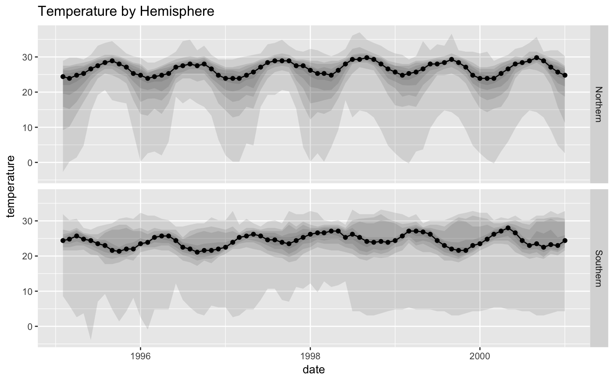

ggplot wrapper for plotting ribbon, taking a stats string or function set as an argument
ggpk_ribbons(mapping = NULL, data = NULL, show.counts = FALSE, fun.data = "mean_se", fun.args = list(), id = "ggpk_ribbons", ...)
| mapping | a ggplot aesthetic mapping |
|---|---|
| data | data to pass to ggplot2::ggplot2::stat_summary functions |
| show.counts | True, False, "label" or "table" to display either as labels at each datapoint or as a table at the top of the plot |
| fun.data | argument to be passed to |
| fun.args | list of argumnets to be passed to
|
| id |
|
| ... | Arguments prefixed with the following
|
a ggpacket object that can be added to any ggplot to draw a collection of layers
When specifying arguments for wrapped ggplot geometries, id the
parameter with geometry specifiers: "ribbon" for ribbon geometry "line" for
central line geometry, or "label" for count labels. e.g.
ggpk_stat_ribbon(ribbon.alpha = 0.8, line.alpha = 0.6)
library(tidyverse) # for dplyr, ggplot library(lubridate) nasa %>% as_tibble %>% mutate(date = ymd("0000/01/01") + months(month) + years(year)) %>% mutate(hemisphere = ifelse(lat>0,"Northern", "Southern")) %>% mutate(temperature = temperature - 273) %>% # plotting ggplot() + aes(x=date, y=temperature) + ggpk_ribbons(fun.data = 'deciles') + facet_grid(hemisphere ~ .) + labs(title="Temperature by Hemisphere")